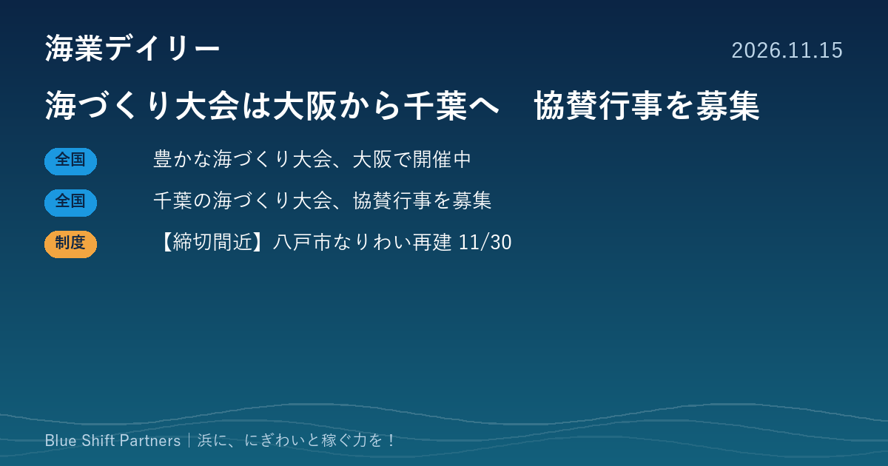

2026.11.15
海づくり大会は大阪から千葉へ 協賛行事を募集

第45回全国豊かな海づくり大会が、11月14日・15日に大阪府で開かれています。次の第46回は令和9年に千葉県で開かれる予定で、千葉県の実行委員会は大会に合わせて行う協賛行事を募集しています。あわせて、八戸市の被災資産復旧の補助金が11月30日に締め切られます。
第45回全国豊かな海づくり大会、11月14日・15日に大阪府で開催
第45回全国豊かな海づくり大会「魚庭（なにわ）の海おおさか大会」が、11月14日（土）・15日（日）に開かれています。大阪府での開催は初めてです。式典行事（岸和田市の南海浪切ホール）と海上歓迎・放流行事（泉佐野市の府営りんくう公園シーサイドウォーク）は招待者のみですが、関連行事の「豊かな海づくりフェスティバル」は岸和田旧港地区緑地（アクアパーク）とりんくうアイスパークの2会場で、誰でも参加できます。
ここがポイント：次の第46回大会は千葉県で開かれます。開催地がどのように大会を地域のにぎわいや水産物のPRにつなげているかは、首都圏の漁協・自治体にとって来年に向けた参考になります。
出典：第45回全国豊かな海づくり大会 魚庭（なにわ）の海おおさか大会 公式サイト（大阪府）（2026-11-12）
令和9年の第46回大会に向け、千葉県が「協賛行事」を募集しています
千葉県で令和9年に開かれる第46回全国豊かな海づくり大会に向けて、実行委員会が、大会の基本理念に賛同する企業・団体などの協賛行事を募集しています。対象は令和8年4月1日から令和9年11月14日までに原則として千葉県内で行うイベント、セミナー、シンポジウム、活動などで、行事の開催日の10日前までに申込書を電子メールか郵送で提出します。水産業関係団体、企業、NPO、学校、任意団体、国、地方公共団体などが応募できます。
ここがポイント：登録すると、実行委員会との協議のうえで、チーバくんの大会専用イラストや大会テーマの使用、のぼり旗・コスチュームの貸出、大会ホームページへの行事の掲載などの特典が受けられます。漁港の朝市や漁業体験、直売イベントを大会と結びつけて発信する機会になります。
出典：千葉県「第46回全国豊かな海づくり大会『協賛行事』の募集について」（2026-09-01）
【締切間近】八戸市 なりわい再建被災資産復旧事業補助金（農林水産業・第3次）11月30日まで
八戸市は、令和7年青森県東方沖地震、令和8年三陸沖地震、令和8年岩手県沖地震で被災し、市内で農林水産業を再開するために施設・設備を復旧する中小企業者や漁業協同組合などを対象に、3次募集を行っています。建物本体を除く施設（附属設備・構築物）と設備の修繕・再取得費が対象で、補助率は3分の2以内、上限は1事業者あたり1,000万円、下限は10万円です。募集期限は11月30日（月）で、郵送または電子メールでの提出が推奨され、提出先は畜産林政課または水産事務所です。
ここがポイント：令和7年12月8日以降に発注した経費が対象です。被災した冷蔵設備や加工機械、作業場の附属設備などを直した事業者・漁協は、申請の前に、市が勧めている電話などでの事前相談を活用してください。
出典：八戸市「中小企業なりわい再建被災資産復旧事業補助金（農林水産業）（3次募集）」（2026-10-27）
全国豊かな海づくり大会は、資源を守り育てる取り組みを広く知ってもらう場です。次は千葉県の番です。浜の朝市や体験、直売のイベントを協賛行事として登録すれば、大会の名前と一緒に発信できます。来年の行事予定を立てる今の時期に、検討してみてはいかがでしょうか。